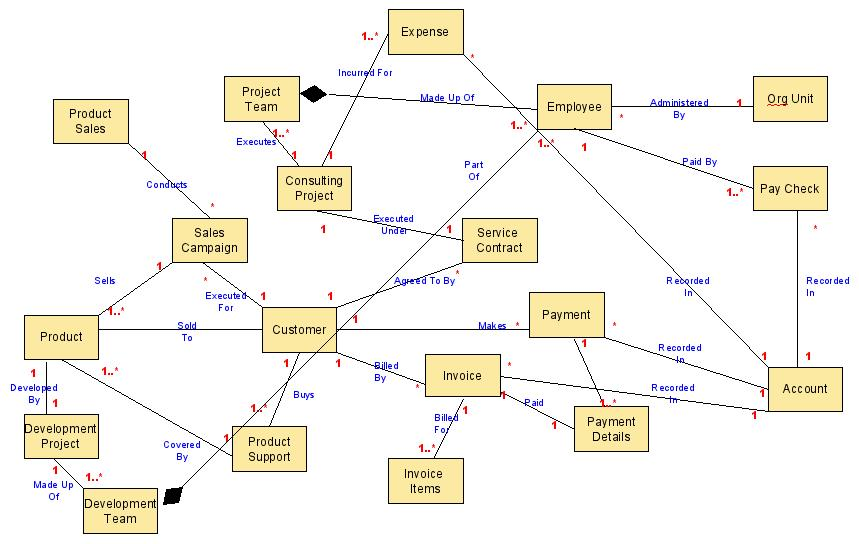
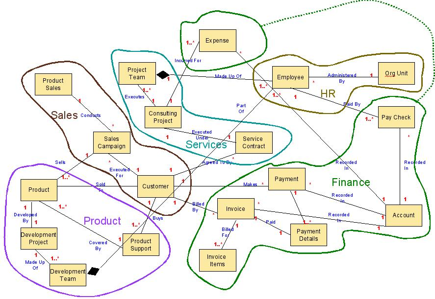

OUM |
Technique Overview |
||
Method Navigation |
Current Page Navigation |
||
|
|
||||||||
The purpose of this technique is to define the Data Relationship approach to Data Modeling.
Enterprise Domain Model (Data Model) - Use of this technique results in a data model focused on the relationships between business entities.
No. |
Step | Component | Component Description |
|---|---|---|---|
1 |
Identify Key Business Entities | Key Business Entities | Key Business Entities are entities that have a meaning to the business, and that can stand on their own. Examples are customer, invoice. |
2 |
Identify Key Identify Relationships between Business Entities. Entities. | Relationships Between Business Entities | Relationships between business entities describe how the business entities interact or depend on each other. |
3 |
Identify Domains. | Domains | Domains are named logical groupings of the business entities. |
4 |
Update Repository |
This technique is used to identify prominent business entities, typically by business analysts, in collaboration with domain owners/experts.
A general approach is to identify core competencies of the business and analyze each one. For example, core competencies of a software company will be developing and selling software, providing consulting services around implementing its software, providing services to support the software etc. Analyzing each such area will yield a set of activities or high-level business process that are required to meet the goals for that particular competency. Analyzing these high-level processes to find how they interact with the business environment will yield a set of key business entities. Another good indication of possible entities is nouns in the description of these activities.
Having identified all the entities relevant to the scope of the discovery, the next step is to identify how these entities interact with each other. This is very similar to creating a database ER diagram or a UML class model, although in this case the entities or classes represent business entities.
Using UML class modeling is a good technique to represent the business entity relationships as UML provides an appropriate way to represent relationships like containment and composition.
Creating a model of business entities with their relationships is important as it helps in determining entity groups that have a high degree of affinity. Doing so supports other activities, like identifying service boundaries.
The resulting model should show what the business does, and how it does it at the level of abstraction chosen.
It is important to ensure that all the important business entities are considered; otherwise the resulting relationships may not yield the optimal business domains and hence may not provide the right set of candidate services.
The following figure shows an example of a business entity model for fictitious software company.

Business domains are logical grouping of entities that:
Identify such groups of entities on the business entity model and draw boundaries denoting these groups. Try to maintain low intra-domain-associations to inter-domain-associations ratio. Although grouping of semantically similar entities should not be sacrificed to maintain a low ratio. The following figure shows domains identified in the example entity relationship diagram:

Update the enterprise repository by adding or updating the model. If requirements have been identified during this task, they should also be recorded in the enterprise repository and each of them linked to an entity.
PLEASE NOTE: This step is especially required if requirements are managed at the enterprise level. Managing requirements at the enterprise level is a must where reuse across projects is required such as it is when the enterprise is has a SOA strategy.
More details about enterprise management of requirements through functional and process models can be found in the Enterprise Requirements Management technique.
There are no templates available to assist with this technique.
This technique is recommended for use in the following OUM tasks:
| Task | Usage |
|---|---|
| Review this technique as input into this task for a SOA Modeling Planning engagement. | |
| Review this technique as input into this task for a SOA Modeling Planning engagement. | |
| Use this technique to identify the relationships between the Business Entities for the Enterprise or business area impacted by the Envision engagement project. |
Use the following criteria to check the quality of this technique:

Copyright © 2006, 2016, Oracle and/or its affiliates. All rights reserved.